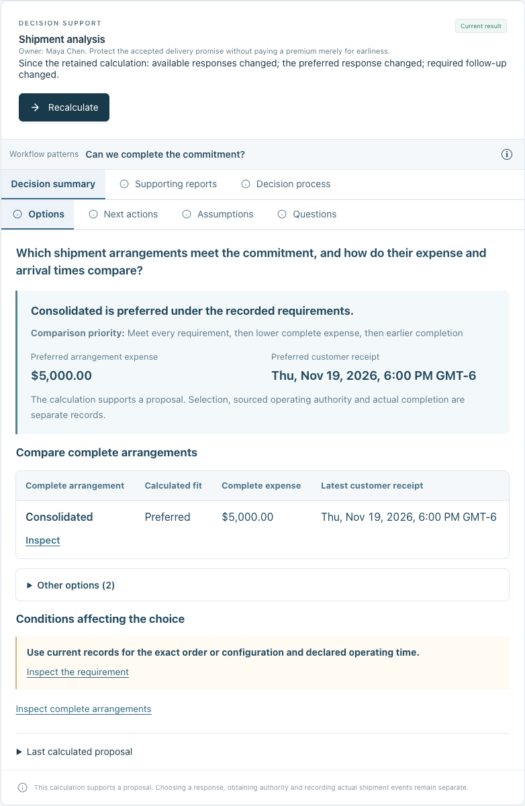

A promise of 120 usable gift kits by tomorrow and a revised shipment due by Friday both depend on evidence. An attractive next action can outrun what the available facts support. A $100 reprint might leave the kits unusable. A carrier confirmation might cover an earlier order. The useful question is specific: what does this evidence establish about the commitment we are trying to make?
These fictional examples start from the Diagnose Before Correcting pattern’s central concern: establish the problem before committing to a remedy. Comparing the situations shows where that concern requires different reasoning methods.
Start with the claim you need to support.
Sometimes we must interpret observations and identify which explanations remain possible. Sometimes we must compare a record’s explicit coverage with a current requirement. Calling both activities “checking evidence” can hide the distinction that determines the next action.
Leah’s gift-kit problem calls for a complete diagnosis before selecting a correction. The shipment problem calls for a current confirmation with the required scope, followed by reassessment of the whole shipping proposal. The shared question about support does not make those assessments interchangeable.
Gift kits: which faults do the observations establish?
Leah has promised 120 usable gift kits by the next day, with a $600 correction limit. Before approving the tempting $100 reprint, she needs to establish what requires correction. The gift-kit example examines three modeled faults: printing, destination and checkout.
The observations concern the same batch, insert and digital revisions, test phone and recipient account. Decoding the printed code returns unreadable on the declared test phone. Inspecting the approved source artwork finds the wrong destination. Rehearsing checkout finds it usable for the intended account.
Under the declared model, the assessment establishes both a printing fault and a destination fault. Usable checkout does not clear those other faults. A reprint alone would leave the destination problem uncorrected.

This is evidence assessment in a precise sense: interpret fixed observations and determine what holds across the admissible interpretations. The result supplies no inferred probabilities and makes no claim to cover every possible cause.
Choosing an affordable complete correction before the deadline is a subsequent task. So is observing a new rehearsal of the corrected kits. The earlier usable checkout result does not establish that the corrected batch has actually been tested.
Shipping: does the record support this revision?
The changed-order shipment example uses a cost-first comparison of Direct, Backup and Consolidated shipping. For ORD-105 revision 2, all three initially fail a requirement. Direct has capacity for 99 of the required 100 units. Backup costs $6,000 against a $5,000 limit. Consolidated has a confirmation covering revision 1.
The Consolidated result comes from comparing explicit scope with the current requirement. A record for revision 1 does not support the required confirmation for revision 2. That mismatch does not establish that no actual booking exists or that the carrier has made a false statement. The available record fails the proposal’s evidence requirement.

This CLI/SDK integration checks commitment requirements and record coverage. Its scoped-record check differs from interpreting the gift-kit observations through alternative fault explanations. A completed assessment with blocked options also differs from malformed input: an invalid currency value needs correction before assessment, rather than an operational remedy for a shipping constraint.
Similar evidence problems, different reasoning.
| Decision question | Gift-kit diagnosis | Shipment confirmation |
|---|---|---|
| What is examined? | Observations interpreted through a declared fault model. | A record’s coverage against the current order and shipping requirements. |
| What supports the finding? | Agreement across admissible interpretations. | Explicit scope matches and satisfaction of commitment requirements. |
| What follows? | Address both established faults, then assess a complete correction. | Obtain genuine current confirmation, then recalculate the proposal. |
| What remains separate? | Correction choice, affordability, timing and a new rehearsal. | Record provenance, operational authorization, booking and delivery. |
Both situations require an explanation of what needs correction or further support before choosing a remedy. Their underlying methods remain distinct. Describing every record check as the formal evidence assessment used for fault diagnosis would obscure that distinction.
New evidence changes support, not the other requirements.
A genuine new carrier record, SLOT-SHIP-105-REV2, names ORD-105 revision 2, Consolidated, ship-point SP-B, destination DC-X and the required loading interval. The example changes the document reference and covered revision while holding the order, quotes, Direct capacity, budget and validity interval fixed. The old confirmation is retained with its original coverage.


Recalculation makes Consolidated preferred at $5,000, arriving Thursday at 6 p.m. before the original Friday at 5 p.m. promise. The new record cannot waive capacity or budget requirements.
Matching the record’s contents also does not authenticate its issuer; provenance depends on the source controls around it. The result supports a qualifying proposal. Authorization, booking and delivery still require their own actions.
Define what evidence must establish in your situation.
Begin adaptation with concrete questions:
- Which claim must be established before we act?
- Are we interpreting observations, matching explicit scope, or doing both?
- Which explanations does the model admit, and which requirements must every proposal satisfy?
- What identifies the relevant item, revision, location, account and time interval?
- Who establishes record provenance, and what subsequent action or observation confirms the promised outcome?
Those answers determine whether the next useful step is diagnosis, a complete correction, genuine current confirmation or a legitimate revision to the operating basis followed by reassessment. The claim and its scope give each piece of evidence its role.